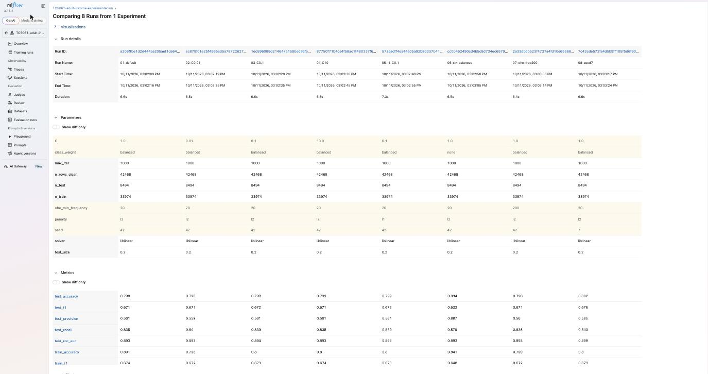
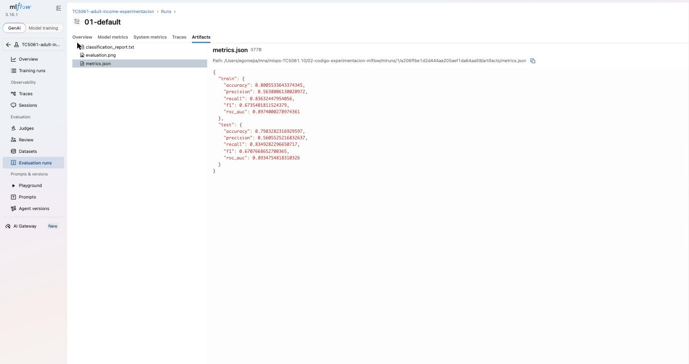

Fernando Mejía Laguna · TC5061.10 – MLOps · 11 de octubre de 2026
Repositorio: https://github.com/ego-mejia/TC5061-experimentacion-mlflow
Comando exacto de una corrida: python train.py --C 0.1 --penalty l1 --run-name 05-l1-C0.1. Las ocho configuraciones se lanzan con ./run_experiments.sh, todas bajo el experimento TC5061-adult-income-experimentacion. El script expone --C, --penalty, --max-iter, --class-weight, --ohe-min-frequency, --test-size y --seed, con valores por defecto. La semilla controla random, numpy, la partición estratificada y el modelo; una corrida adicional con los mismos argumentos que la configuración base (09-repro-check) produjo métricas idénticas.
Se compararon ocho configuraciones (Anexo, Figura 1). Con ROC-AUC y F1 en prueba, la mejor fue 08-seed7 (F1 = 0.676, AUC = 0.899), pero cambia la semilla y, con ella, la partición train/test, por lo que su ventaja no es atribuible a un hiperparámetro. Entre las corridas con la misma partición (semilla 42), la mejor fue 03-C0.1 (F1 = 0.672, AUC = 0.894), seguida de 05-l1-C0.1 (F1 = 0.672).
El hiperparámetro más influyente fue class_weight. Quitar el balanceo (06-sin-balanceo) subió la exactitud de 0.798 a 0.834 y la precisión de 0.561 a 0.697, pero hundió el recall de 0.835 a 0.579 y el F1 de 0.671 a 0.632; el modelo prioriza la clase mayoritaria (≤50K). El AUC no cambió (0.893), porque el balanceo mueve el umbral efectivo y no la capacidad de ordenar los casos. Si se busca detectar ingresos altos, conviene balancear; si importa minimizar falsos positivos, no. En contraste, C (0.01 a 10), la penalización l1 frente a l2 y ohe_min_frequency (20 frente a 200) movieron el F1 en menos de 0.003 y el AUC en menos de 0.001.
Limitaciones. (1) Cada configuración se corrió una sola vez con una única partición; diferencias de 0.002 en F1 están dentro del ruido de muestreo, como muestra el salto de 0.676 al cambiar solo la semilla. (2) Se varió un hiperparámetro a la vez, sin explorar interacciones. (3) Se evalúa con un solo conjunto de prueba y con el umbral 0.5; no hay validación cruzada ni ajuste del umbral. (4) Al ser un modelo lineal, el espacio de hiperparámetros es estrecho; un modelo de árboles probablemente mostraría mayor sensibilidad.

Figura 1. Vista de comparación de las 8 corridas (parámetros y métricas).

Figura 2. Detalle de la corrida 01-default con sus artefactos (classification_report.txt, evaluation.png, metrics.json).